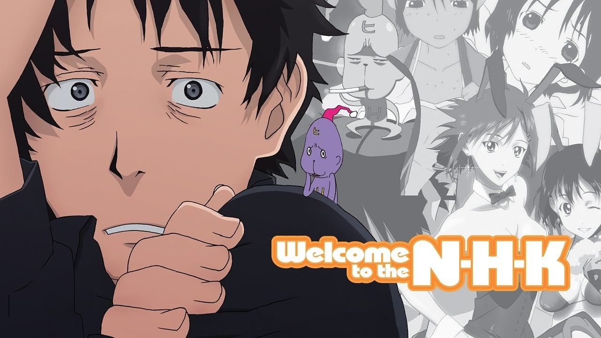

Welcome to NHK!
N・H・Kにようこそ！
 Dua puluh dua tahun putus sekolah Tatsuhiro Satou telah menjadi hikomori selama hampir empat tahun sekarang. Dalam pengasingannya, dia mempercayai banyak teori konspirasi yang tak jelas, tapi ada satu hal khusus yang dia yakini: teori konspirator jahat yang diam-in NEET (tidak dalam pekerjaan, pendidikan atau pelatihan) status Nihhonkikomokai (Nokai) sebuah rahasia yang terletak pada sebuah organisasi rahasia fookori (NOSTOKORI yang berdedikasi.) NHK ni Youkoso! sebuah drama psikologis yang mengikuti Tatsuhiro ... saat ia berusaha kabur dari persekongkolan VICKK dan penyakit isolasi diri sendiri, sementara berjuang bahkan meninggalkan apartemennya dan mencari pekerjaan. Pertemuan tak terduga-nya dengan Misaki Nakahara misterius mungkin sinyal pembalikan keberuntungan untuk Tatsuhiro, tetapi dengan pertemuan ini datang biaya yang tak terelakkan dari harus menghadapi ketakutan terbesar-masyarakat.Kategori : Komedi
volume/chapter :
- Tonton Episode 1
- Tonton Episode 2
- Tonton Episode 3
- Tonton Episode 4
- Tonton Episode 5
- Tonton Episode 6
- Tonton Episode 7
- Tonton Episode 8
- Tonton Episode 9
- Tonton Episode 10
- Tonton Episode 11
- Tonton Episode 12
- Tonton Episode 13
- Tonton Episode 14
- Tonton Episode 15
- Tonton Episode 16
- Tonton Episode 17
- Tonton Episode 18
- Tonton Episode 19
- Tonton Episode 20
- Tonton Episode 21
- Tonton Episode 22
- Tonton Episode 23
- Tonton Episode 24